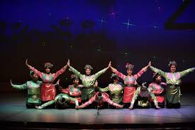
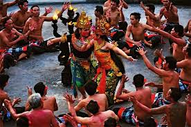
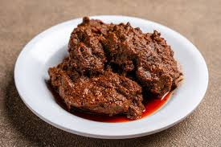
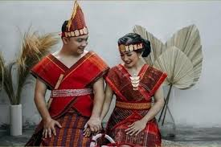
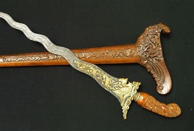
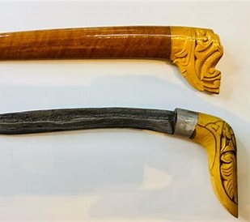

Selamat Datang di Galeri Budaya Indonesia
Jelajahi kekayaan warisan budaya dari Sabang sampai Merauke. Klik tombol di bawah untuk melihat fakta menarik hari ini!
Tarian Tradisional
Tari Saman
Tari Saman dari Aceh dikenal dengan gerakan tangan dan tepukan yang cepat dan dinamis.
Tari Kecak
Tari Kecak dari Bali, dipertunjukkan oleh puluhan pria yang duduk melingkar sambil menyerukan "cak-cak-cak".
Kuliner Khas
Rendang
Masakan daging asal Minangkabau yang dimasak dengan santan dan rempah-rempah selama berjam-jam.
Nasi Goreng

Salah satu hidangan nasi yang paling populer dan mudah ditemukan di seluruh Indonesia.
Pakaian Adat
Batik

Kain bergambar yang dibuat secara khusus dengan menuliskan atau menerakan malam pada kain, kemudian pengolahannya diproses dengan cara tertentu.
Ulos
Kain tradisional suku Batak yang memiliki nilai sakral dan digunakan dalam berbagai upacara adat.
Senjata Tradisional
Keris
Keris adalah senjata tradisional dari Jawa yang memiliki sejarah panjang sejak abad ke-9. Dikenal dengan bilah bergelombang yang melambangkan kekuatan spiritual dan digunakan dalam upacara adat serta sebagai simbol status sosial.
Badik
Badik adalah pisau tradisional dari Sumatra, khususnya suku Minangkabau. Sejarahnya terkait dengan perjuangan melawan penjajah pada masa kolonial dan simbol keberanian serta identitas budaya lokal.